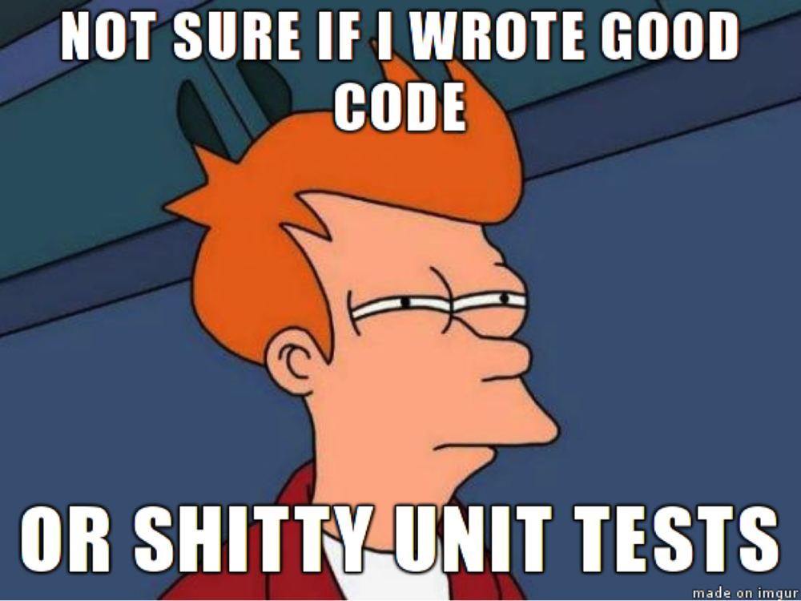

class: center, middle # Kata Mars Rover ## Refactoring / TDD / Pair programming .center[] Pierre Martin - Occitech --- # TDD .center[] --- <div class="center">  </div> --- # Refactoring * Add Parameter * Consolidate Conditional Expression * Encapsulate Field * Extract Class * Extract Method * Extract Variable * Inline Method * Move Field * Move Method * Remove Unused Default Parameter * Rename Method * Rename Variable --- # 4 rules of simple design * les tests passent, * l'intention est exprimée, * pas de duplication, * peu de code. (Corey Haines) --- # Pair programming <div class="center"> <img src="pair.png"width="100%" /> </div> --- # Kata Mars Rover Develop an api that moves a rover around a grid. - You are given the initial starting point (x,y) of a rover and the direction (N,S,E,W) it is facing. - The rover receives a character array of commands. - Implement commands that move the rover forward/backward (f,b). - Implement commands that turn the rover left/right (l,r). - The only commands you can give the rover are f,b,l, and r. --- # Se lancer ```bash mkdir tdd-rover-js cd tdd-rover-js yarn init --yes yarn add jest yarn add babel-preset-env # modifier package.json -> "test": "jest" (bonus "tdd": "jest --watch") yarn test # ou yarn run tdd ``` ```bash mkdir tdd-rover-js cd tdd-rover-js npm init --yes npm install --save-dev jest npm install --save babel-preset-env # modifier package.json -> "test": "jest" (bonus "tdd": "jest --watch") npm test # ou npm run tdd ``` Si Babel, il vous faudra un `.babelrc` comme suit ``` { "presets": ["env"] } ```